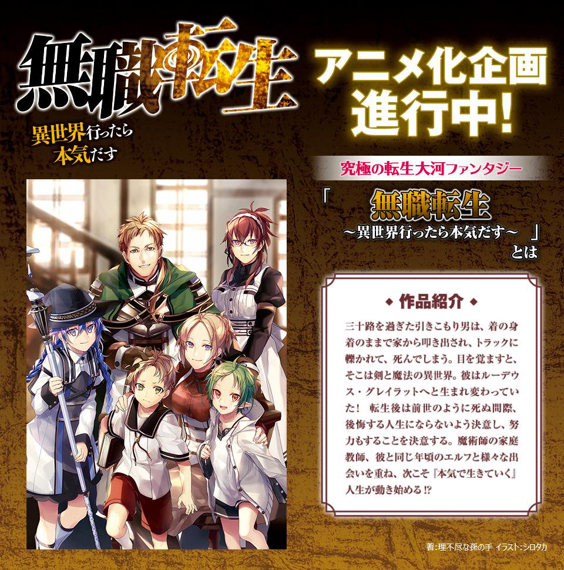

無職転生 アニメ化のお知らせ

どうも。世界二位の理不尽な孫の手です。
世界一位だの世界二位だの、今ではもう何のネタかわからない人もいるかと思いますが、「これが異世界のお約束です！」のネタです。
鹿角フェフ先生、今までありがとう。
さて、まず発表です。
ツイッターの方ではすでに発表したのですが、
無職転生-異世界行ったら本気出す-のアニメ化が決定しました。
わーぱちぱち。
アニメ化ももちろん嬉しいのですが、めちゃくちゃ多くの方が暖かいお祝いの言葉を掛けてくださったことの方が嬉しく、「ああ、この作品はこんなにも愛されているんだな」とお酒を飲みながらしみじみと思いました。
皆様、今まで本当にありがとうございました。
これからも宜しくおねがいします。
さて、無職転生のアニメ化企画について、
と、改めて書こうと思っても、現段階で開示できる情報は特にありません。
ひとまず、特設サイトはこちらになりますが、
http://mfbooks.jp/mushoku/
監督が誰とか、脚本が誰とか、CVが誰とか、何クールでやるとか、皆様知りたい事も多いかと思いますが、ひとまず今回は今回は「アニメ化するよ！」ってだけです。
発表したからといって、すぐに放映開始と言わないのは他の作品と同じ。
しばらく、特に続報が無い状態が続くかもしれませんが、ご了承いただければと思います。
制作に関しては、もちろん私も原作者として、できる限り頑張ろうとは思っています。
ですがなにせ、原作者といってもアニメ制作に関しては素人、良いものにしようと思い余計な口出しをしまくった挙げ句、裏目に出て酷い結果になってしまうような事例は、世の中に多くあります。
アニメ化というと、関わる人数も多く、動く金額も大きく、全てをコントロールするのは非常に難しいです。
ですので、皆様も心穏やかに、「良い作品になればいいナ～」ぐらいの気持ちで待っていていただけると、心労も減っていい感じです。
また随時、開示できる情報が増える度に随時何か書いていこうかと思いますが、今日はひとまずこれだけです。
あ、あと３月２２日に『コミックス １０巻』と『ロキシーだって本気です ３巻』と『ロキシーアンソロジー』が、２５日に『書籍版 ２１巻』が発売されるので、そちらも宜しくおねがいします。
では！